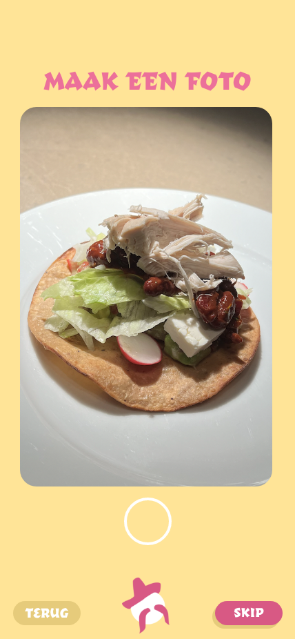
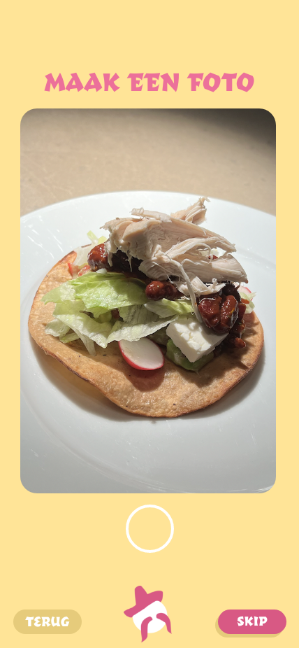

My work
Hbo
Html, Css and JavaScript
In my first year of Hbo I made my first game and website with code. Here are the links to both the game and website
Group projects
Het Passie-project
The 'Passie-Project' was a project where you chose a commen interest with your group and made something based of that. Now it did have to help out the world in a way so this was hard to choose. We decided to make a boardgame with vegetables to teach children about them. I mostly worked on the recepe cards which you can view here.

Party Planet
This was a assignment about the content we put on a webpage. You could create any idea you'd like, it didn't even have to be realistic. We came up with Party Planet, a webpage where you can hire planets to party on. I made this together with my group in adobe XD and it was a lot of fun, because we didn't have any limits. All we had to do is pay attention to the content we put on the page. So for example, make clear call to actions, have a fitting headline or tagline etc.
Heel Holland Kookt
In this project we had to make an app for a certain recepe. The fun part of this project is that we had to test weither everything worked, we had to go out and find people to test the app which was a lot of fun because you start to really know what the user wants. Aside from testing the app we also had to go and make this recepe for ourselfs. I've never done this much research for a design before, but I realised that it's very important and can help the proces of your design so much.

 

Internship
Foodticket
During my Mbo study i had an iternship for about a year at Foodticket. It's a company that offers services, flyers and menu cards to restaurants. It was a great place to learn more about design, photoshop and thinking about what the client wants. My role there was to help the leading designer make flyers and menu's, I would get a mail with details about the clients requests and then make a flyer for them. It was a lot of fun and I'm really happy with what I made in the end. For this interntship I had to make a infographic and report of my experience there which you can see below.

Drawigs made in my free time